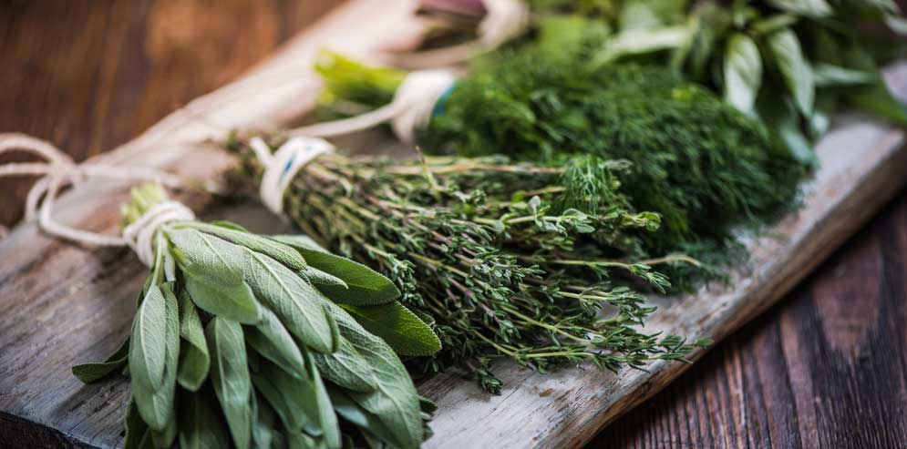

Welcome to Blog
Allacciate il grembiule!
2021.04.14 01:57Crea sito LE MIE RICETTE ANTIPASTI PRIMI PIATTI Pasta Riso e Cereali Gnocchi Lasagne, cannelloni e altra pasta fresca Minestre, zuppe e Vellutate SECONDI PIATTI Carne Pollo Pesce Formaggi, Uova e verdure CONTORNI patate zucchine melanzane Altre verdure DOLCI Biscotti e Muffin creme e dolci al cucchiaio dolci vari TORTE Torte Soffici Ciambelloni Crostate Per le occasioni LIEVITATI LIEVITATI SALATI LIEVITATI DOLCI TORTE SALATE BEVANDE E LIQUORI RICETTE BASE base dolci base salate GUIDE UTILI RICETTARI SPECIALI TUTTI GLI SPECIALI MENU SETTIMANALI INGREDIENTI EPIFANIA SAN VALENTINO CARNEVALE PASQUA ESTATE HALLOWEEN NATALE MENU DI NATALE FACILE ANTIPASTI DI NATALE ANTIPASTI FREDDI NATALIZI PRIMI PIATTI DI NATALE SECONDI PIATTI DI NATALE CONTORNI DI NATALE DOLCI DI NATALE DA REGALARE DOLCI DI NATALE FACILI E VELOCI BISCOTTI DI NATALE CAPODANNO CENONE DI CAPODANNO ANTIPASTI DI CAPODANNO DOLCI DI CAPODANNO VELOCISSIMI TORTE DI NATALE o CAPODANNO SPECIALE DI PASQUA DOLCI DI PASQUA CHI SONO IN LIBRERIA IN TELEVISIONE NUOVO VOLTO DI GIALLOZAFFERANO INTERVISTE E …. VITA DA FOODBLOGGER CONTATTI MEDIA KIT STATISTICHE ALLACCIATE IL GREMBIULE LE RICETTE DEL GIORNO SUL TUO CELLULARE
ARTICOLI IMPERDIBILI
COME SCIOGLIERE I FORMAGGI
FORNO STATICO O VENTILATO
COME SOSTITUIRE IL LIEVITO PER DOLCI
COME SOSTITUIRE IL LIEVITO DI BIRRA
vedi tutti »BISCOTTI YOGURT E PISTACCHI
Biscotti yogurt e pistacchi preparati con una pasta frolla senza burro con farina, uovo e yogurt....ai pistacchi ovviamente, il buonissimo, unico e goloso Yogurt Colato con Pistacchio dei miei amici Caseificio Val d'Aveto. Io adoro lo yogurt in generale ma…INSALATA DI ASPARAGI
Insalata di asparagi freschi, facile, buonissima da preparare e ideale per un pranzo veloce e…POLPETTE DI SPINACI
Polpette di spinaci un secondo piatto facilissimo da preparare, buonissimo che potete fare con gli…COSA CUCINARE DAL 12 AL 18 APRILE
COSA CUCINARE DAL 12 AL 18 APRILE 7 ricette per primi piatti, 7 ricette per…PIZZA DI PASTA SFOGLIA
Pizza di pasta sfoglia una ricetta sfiziosa e facilissima ideale per la voglia di pizza…BUDINO CON CIOCCOLATO AL LATTE
Budino con cioccolato al latte avanzato dalle uova di Pasqua ma ovviamente anche con il cioccolato al latte normale se ne avete e non siete nelle giornata post Pasqua. Questo budino è preparato con la ricetta classica del budino al…TORTA TENERINA CON CIOCCOLATO AL LATTE
Torta tenerina con cioccolato al latte delle uova di Pasqua una torta facilissima da preparare,…SALAME DI COLOMBA
Salame di colomba e cioccolato un dolce facilissimo e veloce da preparare, senza cottura, ideale…CIAMBELLONE CON CIOCCOLATO AL LATTE
Ciambellone con cioccolato al latte morbidissimo, facile da preparare, senza burro e perfetto anche per…PASTA CON LE FAVE
Pasta con le fave un primo piatto primaverile delicato e buonissimo preparato ovviamente con le…Navigazione articoli
1 2 … 325Sui Social
Cerca una ricetta
Cerca la categoria
Vuoi rimanere aggiornato sulle ricette?
Attendi…No, grazie Si, attiva
Tema Seamless Altervista René , sviluppato da Altervista
Apri un sito e guadagna con Altervista - Disclaimer - Segnala abuso - Notifiche Push - Privacy Policy - Personalizza tracciamento pubblicitario
LE MIE RICETTE ANTIPASTI PRIMI PIATTI Pasta Riso e Cereali Gnocchi Lasagne, cannelloni e altra pasta fresca Minestre, zuppe e Vellutate SECONDI PIATTI Carne Pollo Pesce Formaggi, Uova e verdure CONTORNI patate zucchine melanzane Altre verdure DOLCI Biscotti e Muffin creme e dolci al cucchiaio dolci vari TORTE Torte Soffici Ciambelloni Crostate Per le occasioni LIEVITATI LIEVITATI SALATI LIEVITATI DOLCI TORTE SALATE BEVANDE E LIQUORI RICETTE BASE base dolci base salate GUIDE UTILI RICETTARI SPECIALI TUTTI GLI SPECIALI MENU SETTIMANALI INGREDIENTI EPIFANIA SAN VALENTINO CARNEVALE PASQUA ESTATE HALLOWEEN NATALE MENU DI NATALE FACILE ANTIPASTI DI NATALE ANTIPASTI FREDDI NATALIZI PRIMI PIATTI DI NATALE SECONDI PIATTI DI NATALE CONTORNI DI NATALE DOLCI DI NATALE DA REGALARE DOLCI DI NATALE FACILI E VELOCI BISCOTTI DI NATALE CAPODANNO CENONE DI CAPODANNO ANTIPASTI DI CAPODANNO DOLCI DI CAPODANNO VELOCISSIMI TORTE DI NATALE o CAPODANNO SPECIALE DI PASQUA DOLCI DI PASQUA CHI SONO IN LIBRERIA IN TELEVISIONE NUOVO VOLTO DI GIALLOZAFFERANO INTERVISTE E …. VITA DA FOODBLOGGER CONTATTI MEDIA KIT STATISTICHE ALLACCIATE IL GREMBIULE LE RICETTE DEL GIORNO SUL TUO CELLULARE